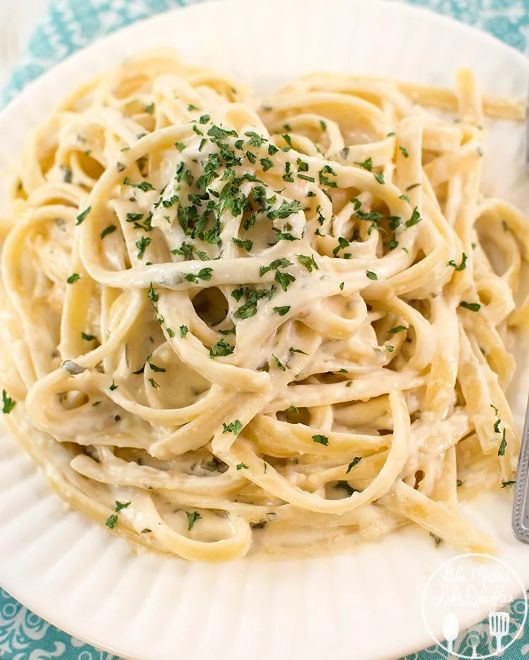

Alfredo

Description
This delicious sauce only requires a few ingredients and loved by many.
Ingredients
- Cream
- Butter
- Flour
- Salt
- Garlic
Steps
- Melt the butter in a saucepan
- Stir in the flour
- Cook a few minutes until it has a paste-like consistency
- Stir in the cream and cook while stiring until the sauce thickens to desired thickness